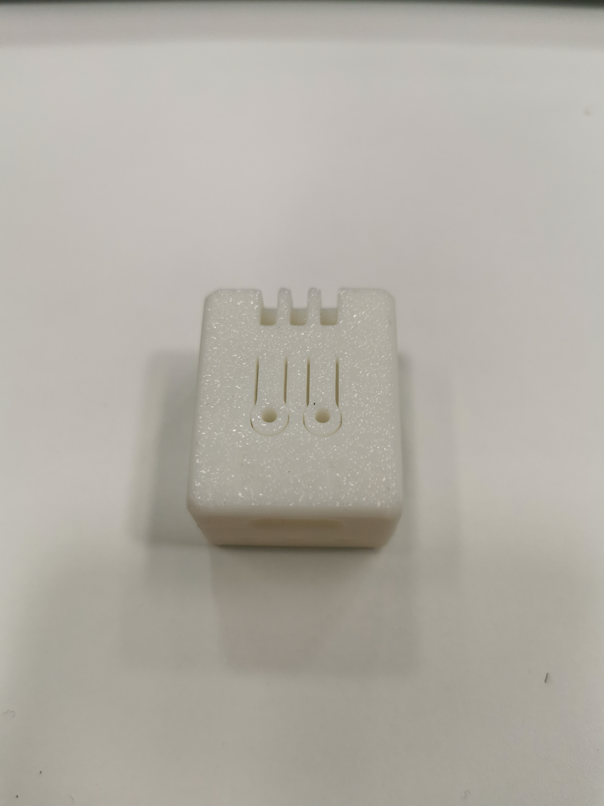

Prototype 2
Adding further edits to the TG case prototype, improving button access and ventilation

- Ventilation holes redesigned to improve airflow, button access improved by adding cutouts.
- Pros: Improved button access, better ventilation.
- Cons: Button access could be further improved.
- Planned improvements for the final version: re-engineer & modify the button access design.